Lab 3.2 - Declaratively create a WAF Policy using Swagger file¶
Note
Objective: Import Swagger file and Create Security Policies
Warning
In this lab, you will NOT use the new “declarative WAF API”. You will use the already existing capability to import a Swagger file (v3 in 15.1), and then create a policy, from an API call and NOT from a declarative call. TMOS binary and documentation of the declarative WAF API was not ready in time for ISC lab building.
1. Open Postman by clicking on shortcut or Clicking the icon on Quick launch toolbar
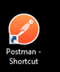{kind=link}
- Collection Name: Arcadia-REST-WAF. Double Click Upload Swagger
{kind=link}
3. Ensure proper credentials are provided
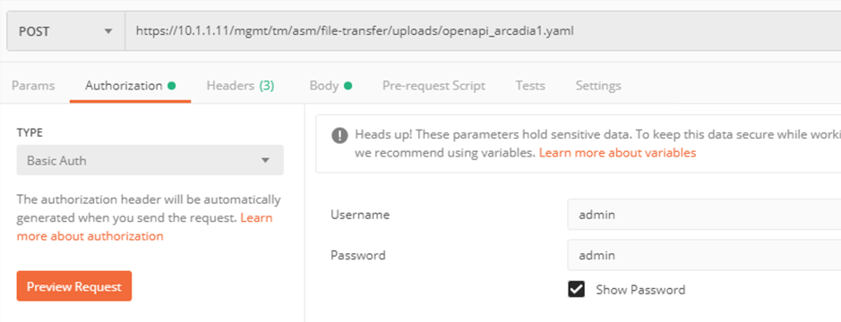{kind=link}
4. Ensure the following headers are set
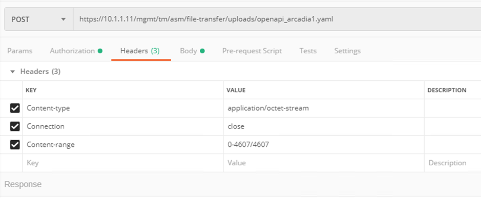{kind=link}
5. Ensure the following body is set
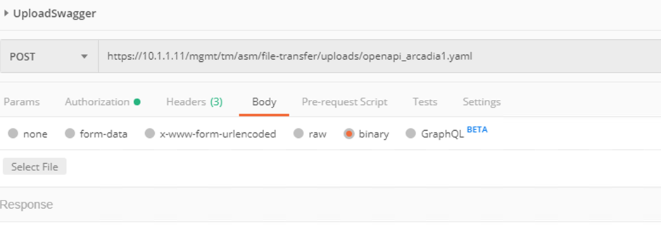{kind=link}
6. Locate Swagger file (swagger_arcadia.yaml) for Arcadia in Downloads folder
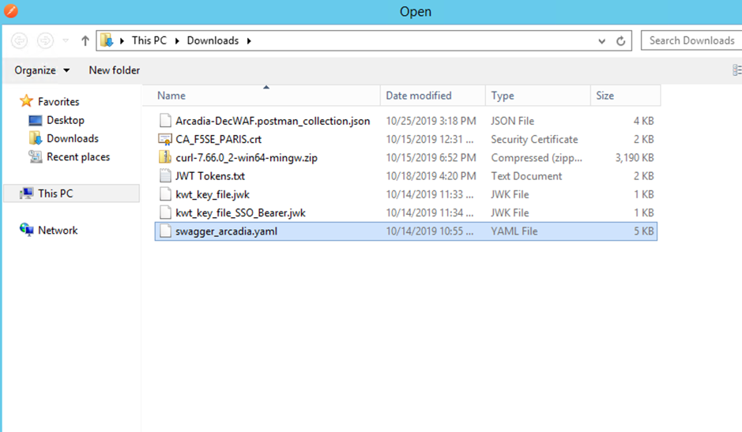{kind=link}
7. Click Send to upload swagger file

8. Swagger file is uploaded
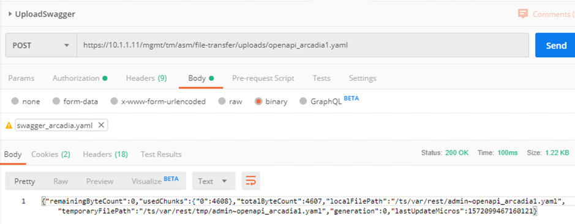{kind=link}
9. Validate by checking the directory /ts/var/rest. There will be a file named admin~openapi_arcadia1.yaml
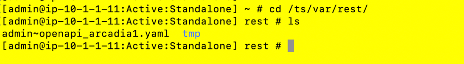{kind=link}
10. On the postman collection, open Postman call named “Import Swagger”. Validate authentication credentials
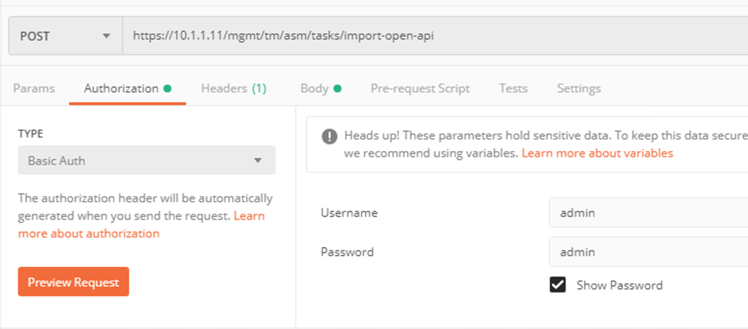{kind=link}
11. Validate Headers
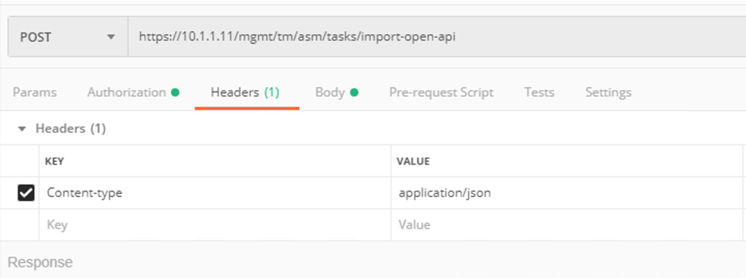{kind=link}
12. Validate the Body has the following JSON. Click Send
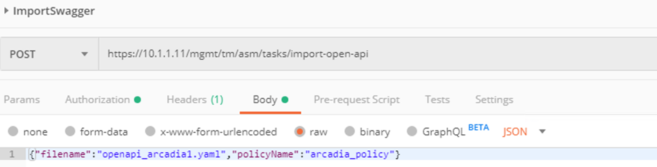{kind=link}
13. It should show the following response.
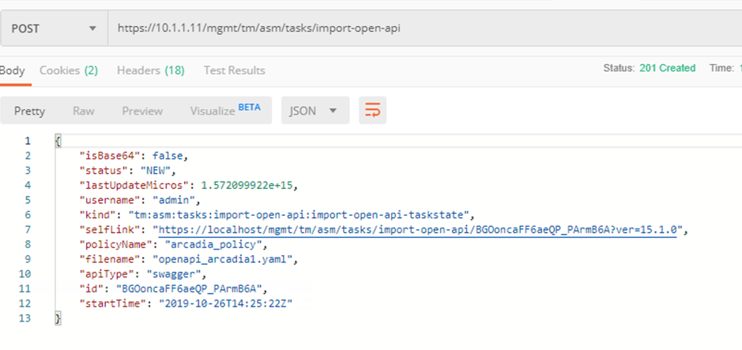{kind=link}
14. Validate the status of policy creation, by running CheckImportStatus REST call
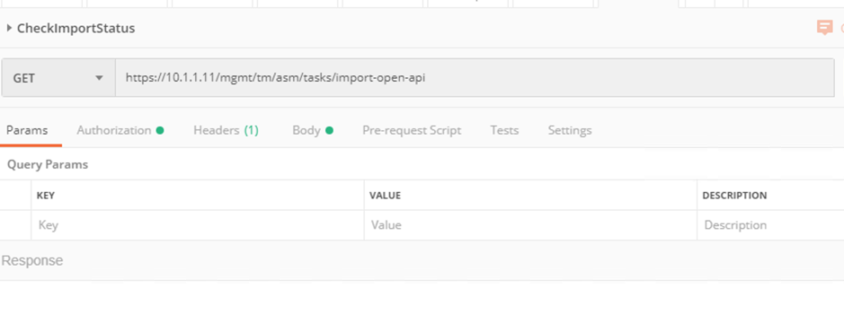{kind=link}
15. On successful completion, we should see status “ COMPLETED”
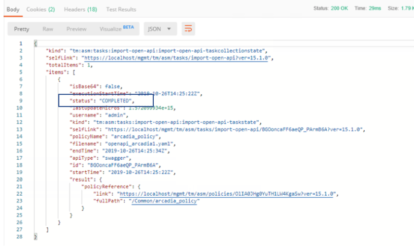{kind=link}
16. Open Postman REST call RetrieveASMPolicies. Click Send
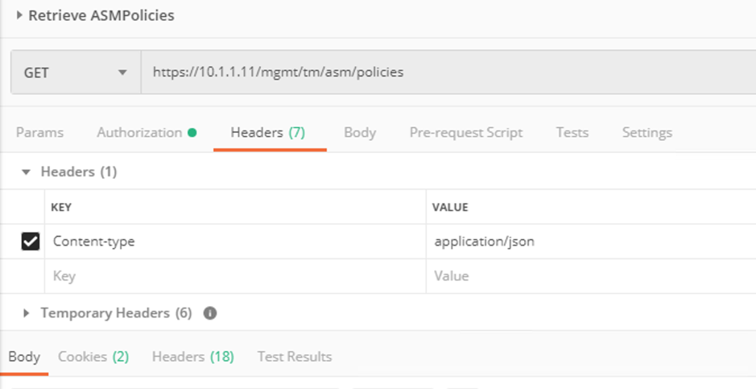{kind=link}
17. Find the policy from the list for arcadia_policy. Check out the link for policy, to get policy hash. This will be used in the next steps. The hash should be OlIA0JHg0YuTH1LW4KgaSw
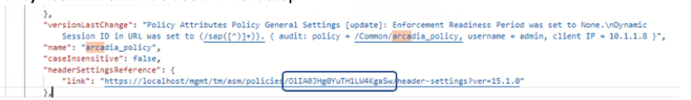{kind=link}
18. Open postman REST call AttachPolicyToVS. Ensure the URL has the correct Policy Hash. Click Send to submite Request
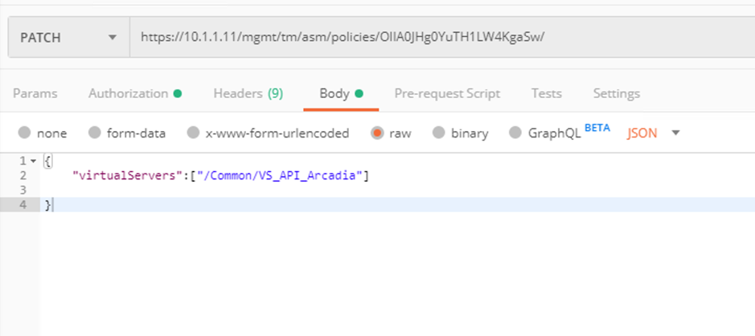{kind=link}
19. Server returns 200 and Policy is patched
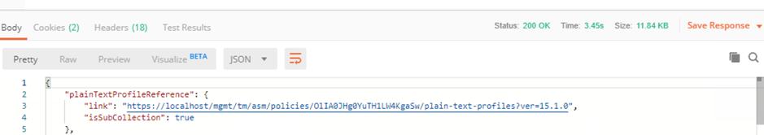{kind=link}
20. Log in to BIGIP Application Security> Security Policy > Policy List. There should be a policy name arcadia_policy
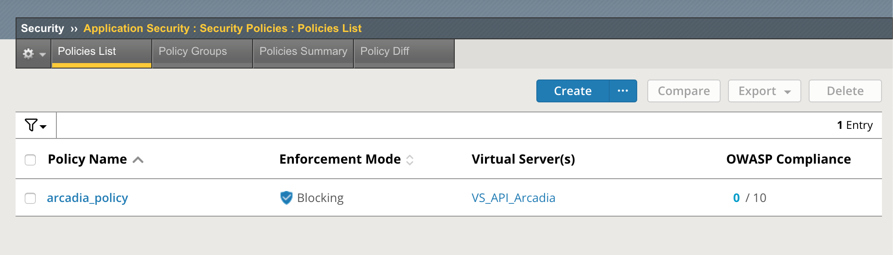{kind=link}
21. To block attacks, move the attack signatures from staging to blocking mode. Click arcadia_policy
22. Click on Attack Signatures
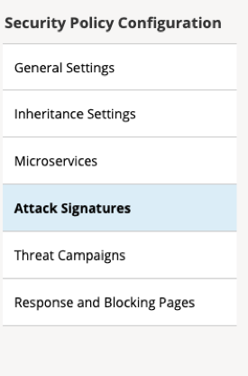{kind=link}
23. Click Enforce> Enforce all Staged Signatures
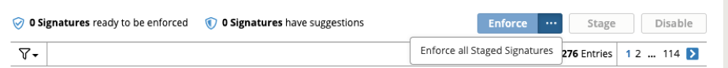{kind=link}
24. Click Apply Policy
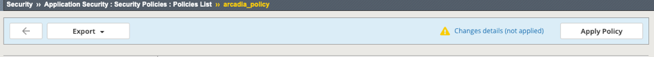{kind=link}